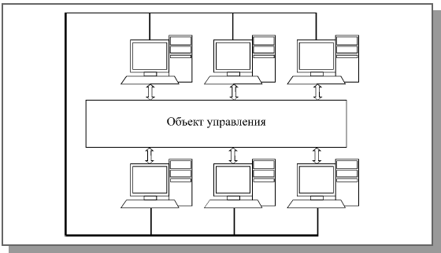

Но нагляднее всего преимущества сети проявляются в том случае, когда все пользователи активно работают с единой базой данных, запрашивая информацию из нее и занося в нее новую (например, в банке, в магазине, на складе). Никакими дискетами тут уже не обойдешься: пришлось бы целыми днями переносить данные с каждого компьютера на все остальные, содержать целый штат курьеров. А с сетью все очень просто: любые изменения данных, произведенные с любого компьютера, тут же становятся видными и доступными всем. В этом случае особой обработки на месте обычно не требуется, и в принципе можно было бы обойтись более дешевыми терминалами (вернуться к первой рассмотренной ситуации), но персональные компьютеры имеют несравнимо более удобный интерфейс пользователя, облегчающий работу персонала. К тому же возможность сложной обработки информации на месте часто может заметно уменьшить объем передаваемых данн
